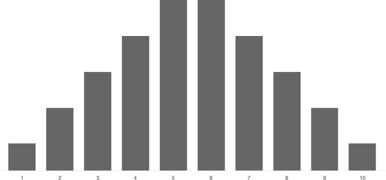

Random Values
The What
Randomness occurs frequently in nature. Gaining control over its generation is therefore paramount to achieving natural-appearing procedural graphics.
The How
p5.js + p5.dom
Learning Objectives
- Technical: Gain familiarity with the p5.js library
- Understand the
random()function and using it to bias outcomes - Be able to identify what random bias looks like
- Gain an understanding of pseudorandom values and what makes it predictable
- Technical: Introduction to Git and Github
[the above section Talia fabricated, it wasn’t on the original. It may require revisiting]
Procedurally Generated Images
Consider:
- Which aspects of each work were influenced by chance?
- Which aspects were controlled by the artist?


What p5 is
From the p5js homepage:
- p5.js
- is a JavaScript library that starts with the original goal of Processing, to make coding accessible for artists, designers, educators, and beginners, and reinterprets this for today’s web.
P5 is a javascript library for making drawings and animations. It makes getting set up and working faster and provides simple functions for common tasks. It also allows for a more imperative programming style, similar to Processing.
If you have never worked with Processing or p5, you’ll need to do some reading and learning on your own. Here are some resources to get you started quickly:
Justin’s Creative Computing Class
The Methodical Application of Chance
2d6 vs 1d12 Chart
Compare the outcomes of rolling 2 6-sided dice to rolling 1 12-sided die.
One
Roll two six-sided dice 50 times. Plot sums.
Two
Roll two twelve-sided dice 50 times. Plot sums.
Generating Random Numbers
Plain Javascript provides Math.random() to generate a random number.
[[move to bottom of section]]
Processing provides the random() for generating random numbers. Without any parameters, random() generates a random number between 0 and 1 (not including the 1). You can pass parameters to control the range of the number. The numbers produced by random are pretty close to evenly distributed.
function setup() {
console.log("random()"); // random()
console.log(random()); // 0.45...
console.log(random()); // 0.12...
console.log(random()); // 0.37...
console.log("random(10)"); // random(10)
console.log(random(10)); // 4.89...
console.log(random(10)); // 1.20...
console.log(random(10)); // 6.99...
console.log("random(20, 30)"); // random(20, 30)
console.log(random(20, 30)); // 21.96...
console.log(random(20, 30)); // 20.56...
console.log(random(20, 30)); // 22.36...
}
Specifying a Range
If you want your numbers evenly distributed over a range, random() works as-is.
random(0,10); // even distribution between 0 and 10
random(10,15); // even distribution between 10 and 15
In some libraries, the random function doesn’t take parameters and always gives you a value between 0 and 1. If you want a different range, you can scale and offset the value yourself:
random() * range + start
random() * 5 + 10 // even distribution between 10 and 15
Random Integers
The random() function returns floating point values, but sometimes you want just whole numbers (integers). The floor() function will round a number down, chopping off the decimal part.
// roll a standard die
floor(random(0,6)) + 1
// or
floor(random(1,7))
// this won't quite work. why?
floor(random(1,6))
The p5 library also has a round() function that rounds a number to the nearest integer. Using round() instead of floor() in the example above will cause incorrect results: 1 will get picked half as often as it should, and 7 will sometimes get picked and should not.
Biased Distribution
The examples above will produce results evenly distributed across their range.
Often even distribution isn’t what you really want. Often you want to bias the results towards the low-end, high-end or middle. Simple averaging and the min() and max() functions can help with this.
Even Distribution:
random(1,11)

Low Bias Distribution:
min(random(10), random(10))
Taking the lowest of two or more random numbers will bias the result toward the low-end.

The more random numbers you use, the stronger the bias: min(random(10), random(10), random(10), random(10))

High Bias Distribution:
max(random(10), random(10))

(random(1,11) + random(1,11)) / 2

Normal Distribution:
(random(1,11) + random(1,11) + random(1,11)) / 3
If you generate several random numbers and average them, the result gets close to normal (bell curve) distribution.

P5 also provides the randomGausian() function for generating numbers with normal distribution. With randomGausian the possible values are not clamped to a range, extreme outliers are just really rare.
More Info
Anydice: Three Basic Distributions
Dice vs. Decks
If you roll a die a few times you might get the same value more than once, and it might take a long time before a particular value pops up.
If you roll a normal die six times, it is unlikely that you’ll get all six values without repeats (only happens 1.5% of the time).
Also, it wouldn’t really be odd to not roll any 1’s (happens about 33% of the time). In fact, you can be pretty sure that at least one number won’t pop up in six rolls (98.5% sure).
A deck of cards works differently. When you pull cards from a shuffled deck, you get a value in a random order, but you avoid duplicates, and you can make sure you tour all the values eventually.